If this is your first time, read the Quick guide and the Glossary: in 5 minutes you'll be flying with Nova. After that, the manual goes through the program section by section, in the same order as its menu, with real screenshots. You also have it inside NOVA AI: the 📖 Read the Manual button.
The phrases you can say to Nova look like this: "Nova, lower the landing gear". Keys look like this: Insert. Buttons and sections of the program are in bold, and folder paths in code format.
Five steps and you can talk to Nova in Star Citizen. You'll discover the rest as you go.
Open NOVA AI Setup.exe and press INSTALL. It takes a few minutes and creates the NOVA AI shortcut on the desktop. (Section 02)
The first time, she asks your name, what you want to call her and how she hears you through the microphone. Just answer. (Section 03)
So she can hold a conversation, paste a free Gemini or Groq key in Nova › Intelligence. It takes 2 minutes. (Section 11)
In Star Citizen: Options › Graphics › Window mode › Borderless. That way Nova's logo and holograms show on top of the game.
Hold your key (Insert by default) and speak, or say her name: "Nova, lower the landing gear". Minimise the NOVA window while you play, or close it: she stays in the Windows tray.
| Say… | And Nova… |
|---|---|
| "Nova, lower the landing gear" | Presses your game keys (landing gear, shields, quantum, lights…). |
| "What is Laranite?" | Tells you right away from her Lookup dictionary. |
| "Tell me about Daymar" | Planet card, with a hologram on top of the game. |
| "Look up a player" | Asks for the handle and shows their RSI record (and, if you say "yes", posts it to your Discord). |
| "Which route pays most with 100,000 aUEC?" | Works out the best trade route for your cargo hold. |
| "Remind me in 3 hours, the refinery" | Sets a timer that reminds you even if you close NOVA. |
| "Send a message to chat: anyone need an escort?" | Translates it if needed and types it in the game chat. |
| "Where can I buy a P4-AR?" | Tells you, or opens the community item finder. |
| "Nova, stop" · "Nova, activate" | Stops her (cancelling whatever she's looking up) and activates her again. |
| "Who are you?" · "What can you do?" | She introduces herself (with an anecdote about her creator) and tells you everything she can do. |
| "Open the manual" | Opens this manual in your browser. |
| Word | What it means |
|---|---|
| Cockpit | NOVA's main screen: what you say, what she answers and the game alerts. |
| Overlay | Nova's logo, drawn on top of the game, which changes colour depending on what she's doing. |
| Hologram | A card (player, planet, place) that appears for a few seconds on top of the game. |
| Borderless window | "Borderless": a Star Citizen display mode that lets you see the overlay and the holograms. |
| Talk key | The key you hold down while you talk to her (like a radio). Insert by default. |
| Game.log | A file the game itself writes with what happens in your session. Nova reads it to keep you informed. |
| global.ini | The file with all the game's texts (in your language if you have a translation). Nova uses it to understand alerts and fill her dictionary. |
| Logbook | The diary Nova writes for each game session: where you were, fights, contracts… |
| Lookup dictionary | Nova's "physical memory": a text file with thousands of game definitions. She answers from it without spending AI. |
| AI key (API key) | A free code from Google, Groq and others so Nova can talk with her artificial intelligence. |
| Quota or tokens | What each question to the AI "spends". Free keys have a daily limit; Nova tries to save. |
| Handle | A player's nickname on the RSI website (robertsspaceindustries.com). |
| Discord webhook | An address of your Discord channel where Nova can post cards. |
NOVA AI is your onboard artificial intelligence: you call her by name or with a key, she answers with a natural voice, presses the game keys for you and always knows what's going on in your session. Everything she uses is free.
Hold a key, a mouse button or a HOTAS button, or just say her name: "Nova, …".
Lowers the landing gear, requests a landing pad, raises shields or jumps to quantum by pressing your game keys.
Lore, ships, mining, crafting blueprints, missions and prices, with data from the current patch.
She reads Game.log: she knows where you are, who boards your ship, contracts, ATC and combat.
She records every session (place, ship, deaths, kills, healing…) and remembers what you tell her.
She installs the community translation of the game in your language with a single click.
Her logo changes colour in a corner, and cards appear for players, targets, planets and places.
Their public RSI record and their organisation's, on screen, in the logbook and in your Discord channel.
"Send a message to chat…": she translates it if needed and types it in the game chat for you.
Her physical memory: thousands of definitions without spending AI, and she learns by herself what she doesn't know.
Refining and contracts with a voice reminder; trade routes with the real profit for your cargo hold.
On start and on exit she checks GitHub for a new version and asks whether you want to install it.
| Requirement | Details |
|---|---|
| Windows 10 or 11 | 64-bit. The installer uses components Windows already has. |
| Microphone | Any will do. With headphones, Nova doesn't hear herself through the speakers. |
| Internet connection | For the AI, the neural voices and the game data. Key commands work without it. |
| Python | You don't need it: if it's missing, the installer downloads Python 3.12 just for Nova. |
| NVIDIA card (optional) | Speeds up local speech recognition (Whisper). Without one, the processor or the cloud is used. |
| AI keys | Free and in 2 minutes (section 11). Since 2.1.5 every pilot adds their own: NOVA no longer ships with built-in keys. |
A single file, NOVA AI Setup.exe, installs everything in a few minutes: the program, Python if needed, the voices and the shortcuts.
Double-click NOVA AI Setup.exe (the icon with the arrow). Windows will ask for administrator permission because it installs into C:\Program Files\NOVA AI: click Yes.
First comes the language (español, English, català, français or Deutsch; your Windows language is preselected). Then the Terms of use and Privacy policy in that language. Read them, tick "I have read and accept" and click ACCEPT AND CONTINUE. Nothing is installed unless you accept them.
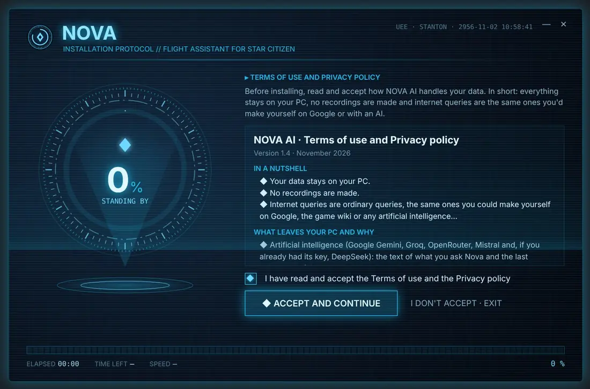
NORMAS_Y_PRIVACIDAD.en.md.The installer checks Python, your graphics card, free space and the connection. Under ▸ INSTALLATION FOLDER you see where it will be installed and the free space on that drive: CHOOSE FOLDER… moves it to another folder or drive (for example D:\Games\NOVA AI). Choose the options too: NVIDIA acceleration, offline voice (Piper), desktop shortcut and starting Nova when it finishes. Then press ◆ START INSTALLATION SEQUENCE.
When updating, NOVA AI stays in the folder it was already in; to move it elsewhere, uninstall it first (your data is kept).
You'll see each step with its status, the percentage, the download speed and the time remaining. If something fails, the Retry and View log buttons appear.
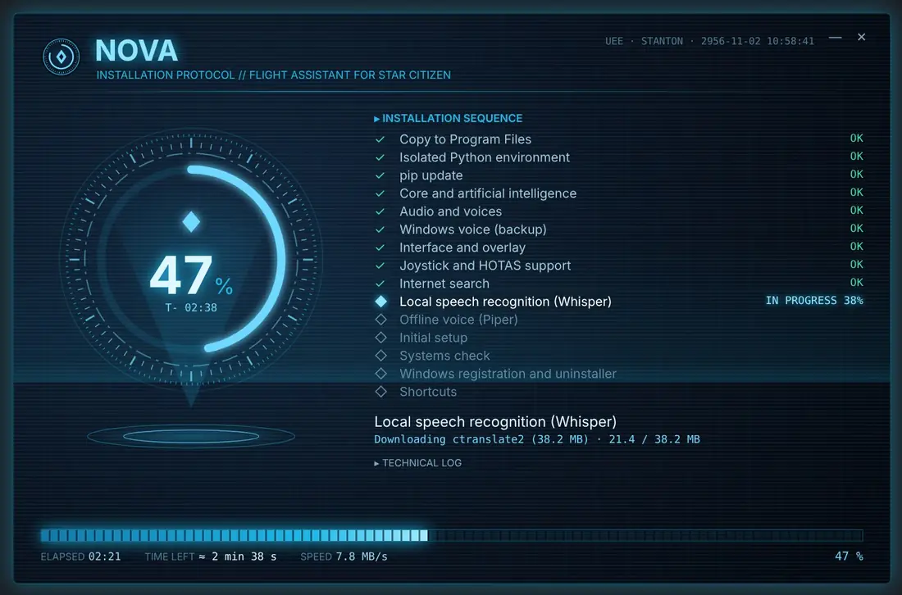
When it finishes you'll have the NOVA AI shortcut on the desktop and in the Start menu. The first time you open it, the first-time setup begins (section 03).

C:\Program Files\NOVA AI or the folder you chose.%LOCALAPPDATA%\NOVA AI\datosOn start and on exit, NOVA checks GitHub (github.com/0zzyt0/NOVA-AI) for a new version. If there is one, she tells you on screen and out loud:
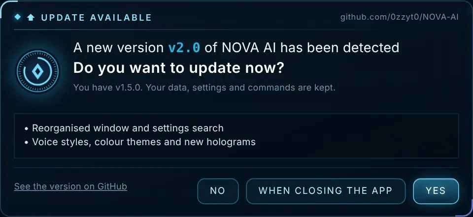
You can also answer by voice: "yes", "no" or "on exit". If you don't answer and close NOVA, she asks you in a window as you leave. Your data, settings and commands are always kept. If you already accepted that version's terms, the installer doesn't ask for them again.
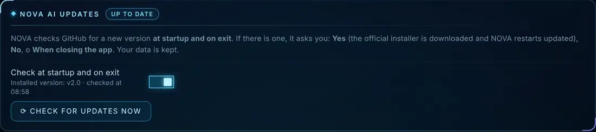
The first time, Nova opens a 7-step wizard. You can answer by speaking (microphone button) or by typing. Each answer is marked with a green ✓ if she understood you; if a red ✕ appears, say it again.
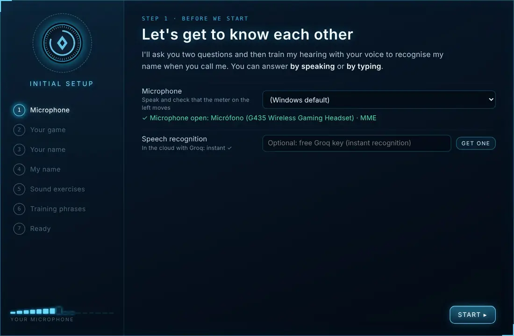
Choose your microphone and speak: the meter on the left should move. Paste your Groq key here if you have one (section 11); it's optional.
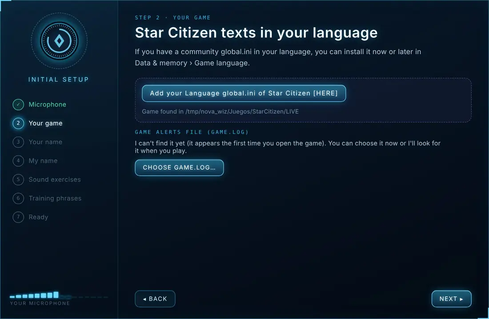
Nova looks for your Star Citizen LIVE folder and its language. If the game isn't in your language, you can install the community translation later from Data & memory › Game language (section 09).
Can't find the game? Click Choose folder and point to your StarCitizen folder.
Below you'll see the game alerts file (Game.log): where she found it or, if you play from another folder, CHOOSE GAME.LOG…. If it doesn't exist yet (it appears the first time you open the game), Nova will look for it herself when you play.

In Spanish, with Yes, download and install it she downloads the 0zzyt0 translation, copies it into LIVE and sets your user.cfg to Spanish (the game's voices stay in English). Before that she saves a copy: user.cfg.nova_copia.
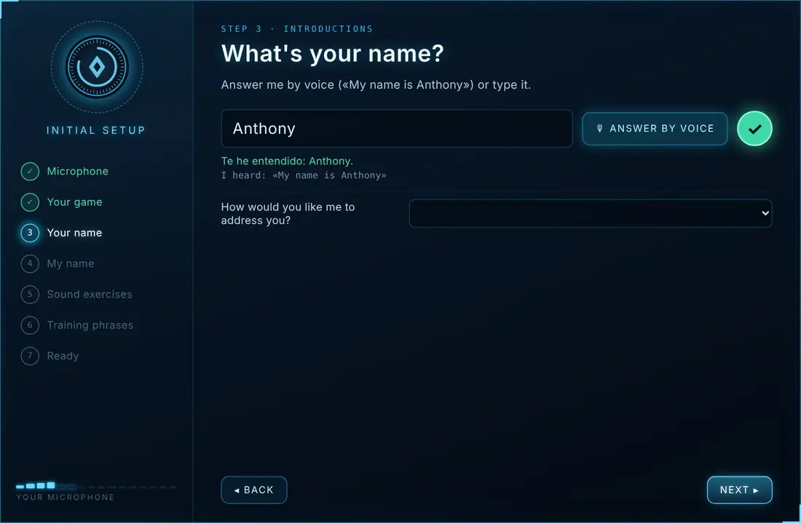
Say "My name is Anthony" or type it, and choose how you want her to address you: sir, captain, by your name…
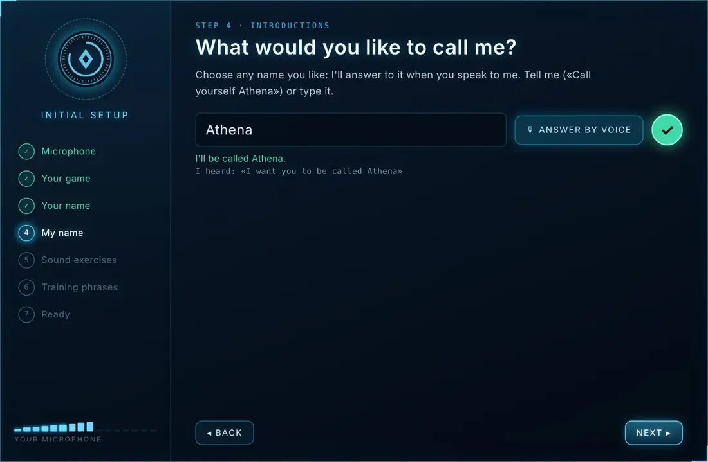
Any name you like: Nova, Athena, Jarvis… She warns you if it's too short or a common word, because she'd wake up by accident. Two or three syllables work best.
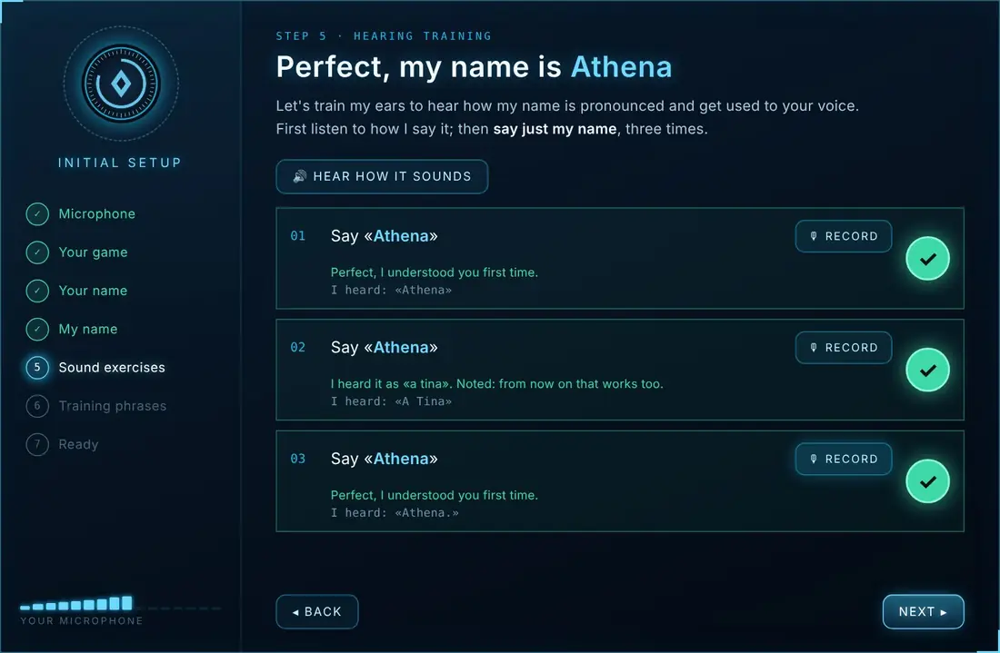
Click Hear how it sounds and then say only her name three times. If speech recognition writes it differently ("A Tina" instead of "Athena"), Nova learns it.
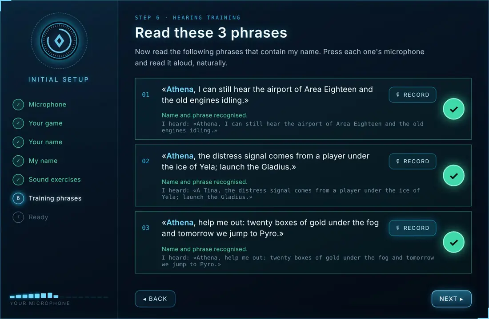
Read aloud 3 Star Citizen phrases that start with her name. They come up at random: one with many vowels in a row (to catch your vocalisation), another with tricky consonants and another that mixes both. That's how she adjusts the sensitivity to your voice and your room's noise.
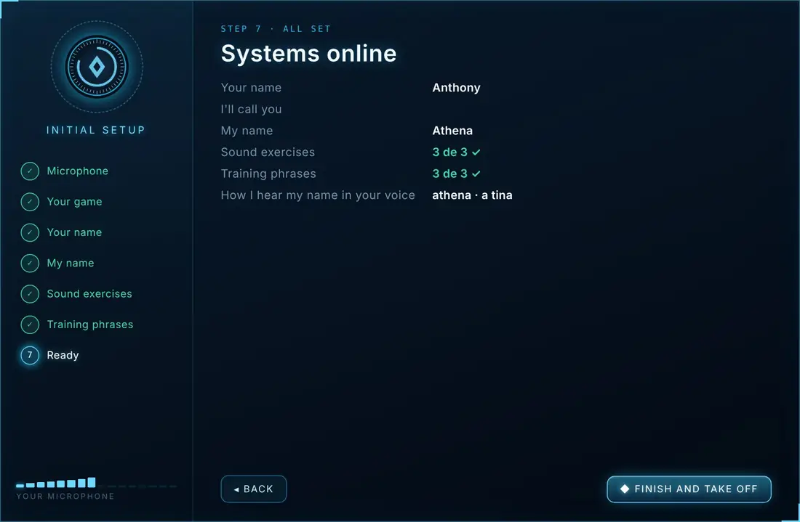
A summary of everything. Click ◆ Finish and take off.
Nova opens in a window of her own. If you close it, Nova stays in the Windows tray, next to the clock (section 10). When you open it again it restores the conversation, the section and the window size.
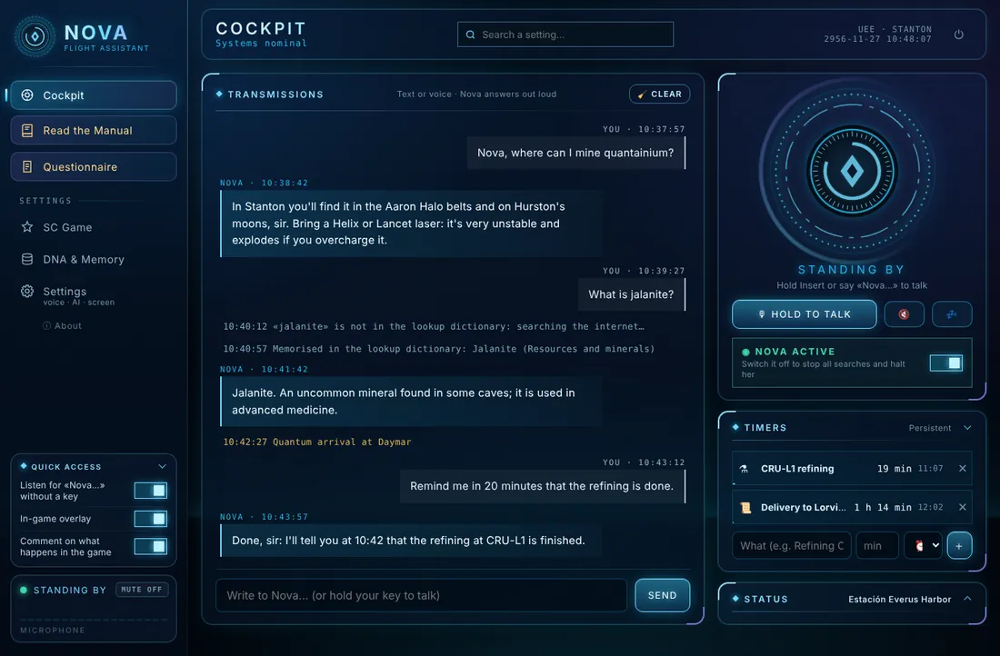
12 34 56 78 910 11Everything fits without scrollbars: if the window is short, the hologram shrinks and Status, Timers and Quick access fold away by themselves (folded, they show a summary such as "2 active"). Click their header to open or fold them; Nova remembers it.
| Section | What you'll find |
|---|---|
| 📖 Read the Manual | Below Cockpit: opens this manual in your browser (in your language). |
| SC Game | Voice commands, keys and joystick, game alerts (Game.log and ship profiles), game chat and game language. |
| Nova | Identity, voice (styles, pronunciation and audio output), listening (microphone, how to talk to her and sleep mode) and intelligence (with token saving). |
| Screen | The status logo and the holograms over the game, and the appearance: effects level and colour theme. |
| Information | Sources and server status, Dictionary, what she knows about you, logbook and statistics, and Discord. |
| Settings | NOVA AI language, window and tray, updates, About, backups, files and starting over. |
| 🔎 Search a setting | In the header (or Ctrl+F): type part of an option's name and it takes you straight there. |
The Cockpit is the record of everything you say to Nova and her answers. Under each answer you'll see which AI engine produced it (for example, via gemini-flash-lite-latest).
Hold Insert while you speak and let go. You can change it to any key, mouse button or HOTAS button.
"Nova, lower the landing gear". If you only say "Nova", she answers "Yes, sir?" and waits for the order.
Use the Cockpit text box and click SEND. Ideal when you're in a Discord voice call.
| Type | Phrases |
|---|---|
| Manoeuvres | "lower the landing gear" · "request landing" · "VTOL mode" · "quantum jump" |
| Systems | "shields on" · "main power" · "open the doors" · "lights" |
| Game information | "where can I mine quantainium?" · "how much does laranite sell for?" · "blueprints for a pistol in Pyro" |
| Your session | "where am I?" · "where did I leave my character?" · "who boarded the ship?" |
| Memory | "remember that my favourite ship is the Cutlass" · "forget about the Cutlass" |
| Players and planets | "look up a player" · "tell me about Daymar" · "what is Security Post Kareah?" |
| Timers | "remind me in 3 hours and 20 minutes, the ARC-L1 refinery" · "what timers do I have?" |
| Trade and servers | "which route pays most with 100,000 aUEC?" · "how are the servers?" |
| Combat and statistics | "pin the target" (goes into the logbook) · "how many kills this month?" |
| Controlling Nova | "Nova, stop" or "deactivate" (stops her) · "Nova, activate" · "silence" or "quiet" (she stops talking) |
| About Nova | "Who are you?" · "Introduce yourself" · "What can you do?" · "Open the manual" |
| Game chat | "Nova, send a message to chat: anyone need an escort?" (she translates it if needed and types it) |
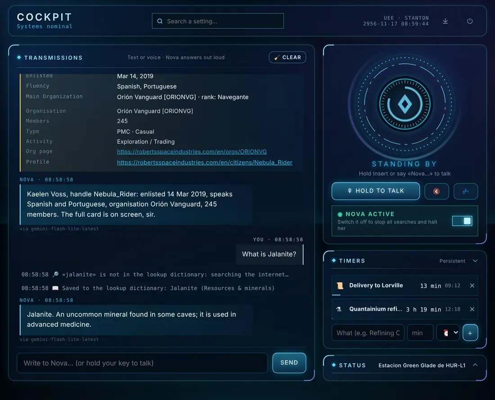
90, 1:30 or 2h30) and click ＋.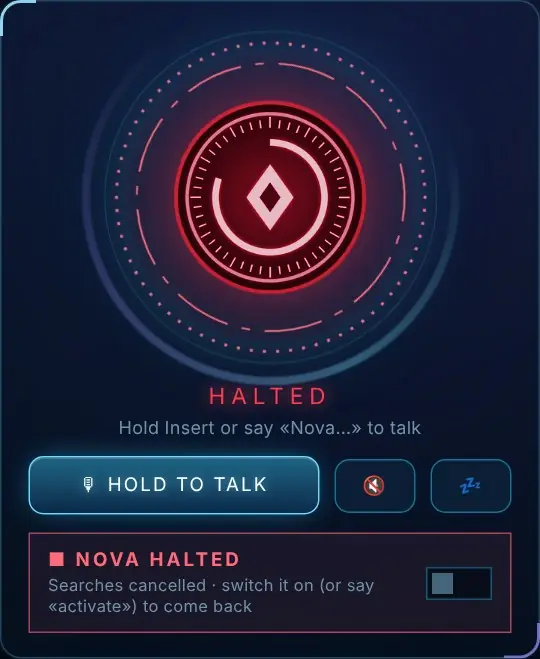
Where you are, your active contracts, the overlay and RSI servers: when NOVA starts she checks status.robertsspaceindustries.com and warns you about outages or maintenance.
Nebula_Rider) and press Enter. If you say it all at once ("look up the player Nebula_Rider"), step 2 is skipped.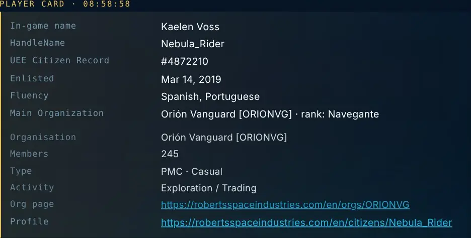
Nova reads their public record on robertsspaceindustries.com: in-game name, handle, UEE Citizen Record, enlistment date, languages and main organisation, and then that organisation's page (members, type, activity). Their police record also appears as a hologram on top of the game (section 08).
If some data is hidden (RSI shows it as [REDACTED]), Nova tells you that information is hidden.
Every search is saved in Information › Logbook & statistics, in the file Busquedas_de_jugadores.log: date · time · player · organisation.
With a webhook in Information › Discord, Nova asks "Shall I send it to Discord?" and, if you say or type "yes" within 30 seconds, she posts it to that channel (bounty targets in red). The Cockpit tells you whether it arrived.
When you accept a bounty hunter or PvP mission (or when "New objective: Neutralise XX" appears), Nova asks "Shall I look up their RSI record?" and only looks it up if you say "yes". If they have a record they're a player: an alert sounds and their card appears in red with the "BOUNTY TARGET" stamp. If not, she tells you it's an NPC pilot. Both cases go into the player search log.
Everything to do with Star Citizen, in five tabs: Voice commands, Keys and joystick, Game alerts, Game chat and Game language.
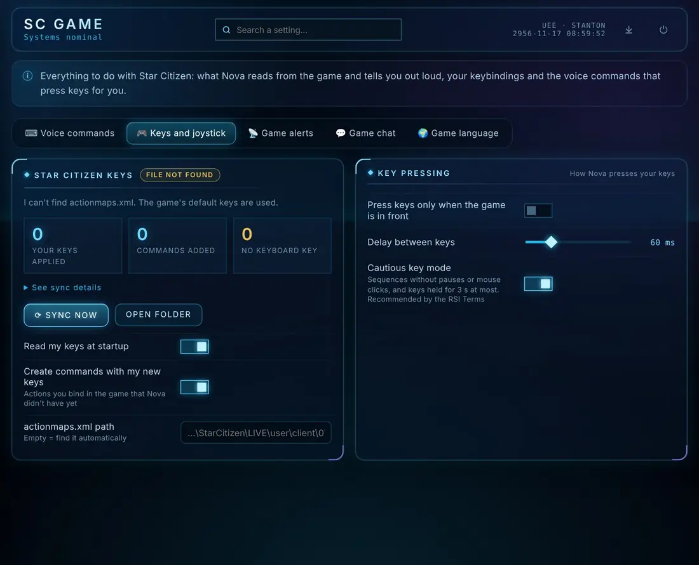
actionmaps.xml on start and uses your own keys.The list of commands grouped by category (takeoff and landing, power and systems, weapons, mining…). Each one shows its phrases and keys. You can search them by name, phrase or key.
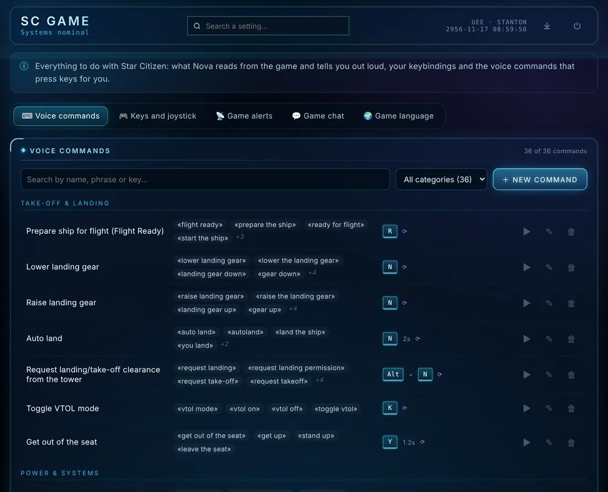
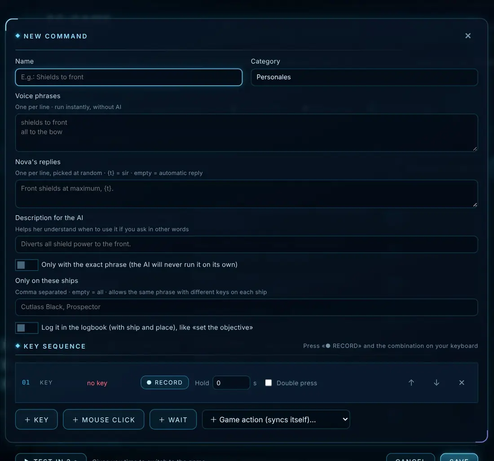
Only in these ships limits a command to certain ships (and allows the same phrase with different keys in each one). Note it in the logbook records it with the ship and the place, like "pin the target".
comandos_personales.json): updates don't delete them. ↺ restores a built-in command.Each ship can have its own spoken alerts: for example, no party or money alerts in the MOLE. Nova knows which ship you're in from the Game.log. Type or choose the ship, click ＋ CREATE PROFILE and tick what you want to hear in it; what differs from the general alerts is shown in yellow. The profile of the ship you're in is marked IN USE.
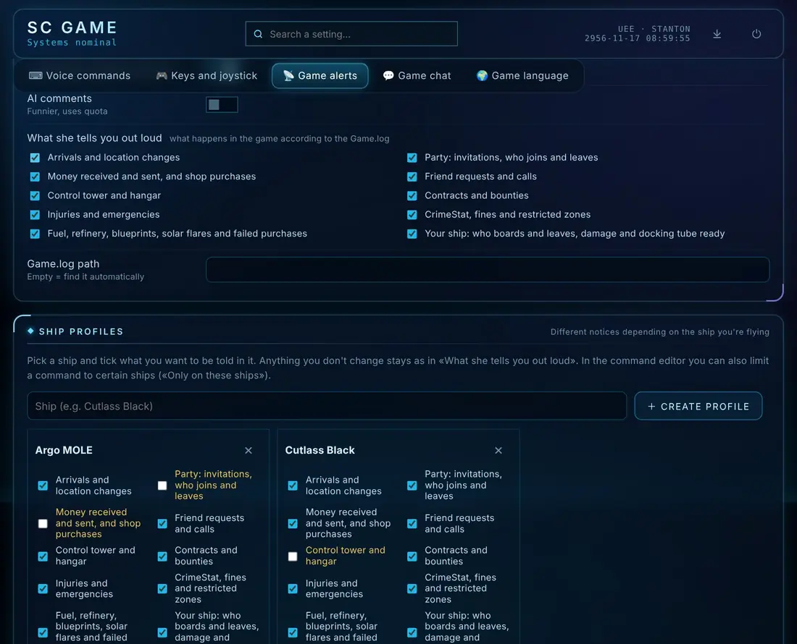
The Game.log doesn't record when you pin a target ("tagging" an enemy). If you ask her by voice ("Nova, pin the target", "mark the target"), Nova presses the key and notes it in the logbook (label TARGET) with the ship and the place.
"Nova, which route pays most with 100,000 aUEC?": with UEX prices she works out how many SCU to buy for the cargo hold of the ship you're in (or the one you name), the stock at the origin, the demand at the destination and your money, and sorts by real profit. If she doesn't know your ship she uses the Default cargo hold in Information › Sources.
Type in the Star Citizen chat without letting go of the controls, and in English even if you speak to her in another language:
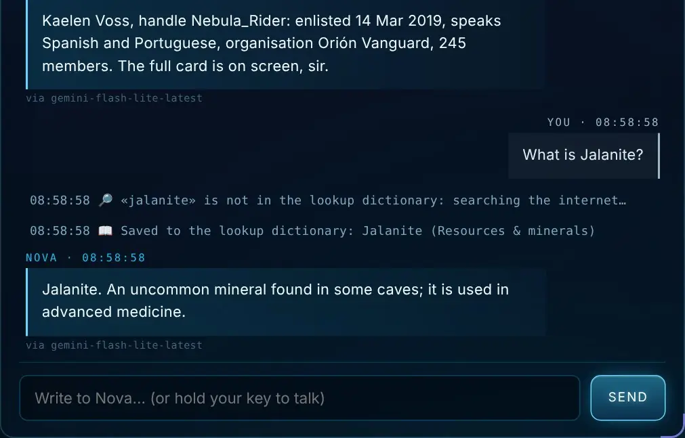
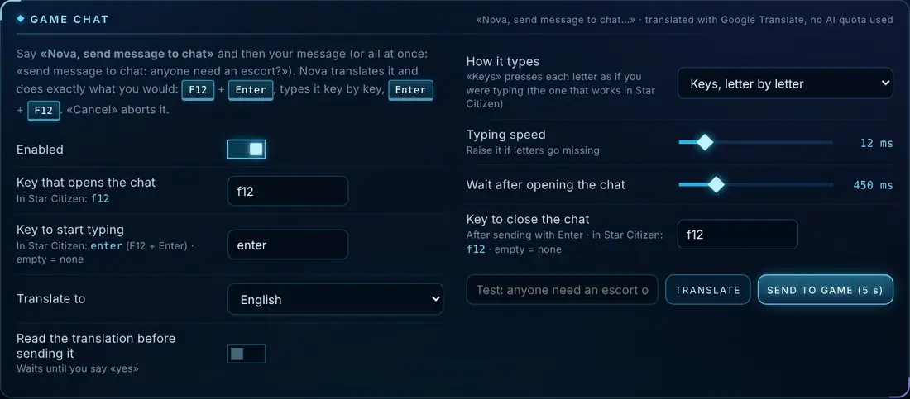
Type a message and click TRANSLATE to see the translation, or SEND TO GAME (5 s) and go back to Star Citizen: it's typed after 5 seconds. "Cancel" cancels a pending message. Every message goes into the logbook (label CHAT).
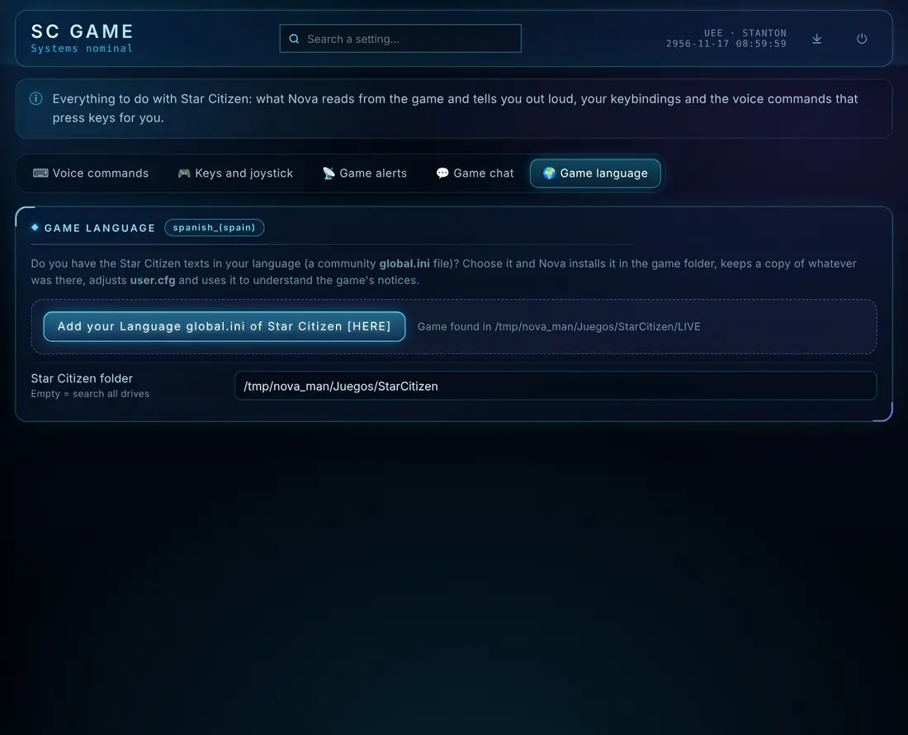
global.ini you choose. It overwrites the files in LIVE after making a backup.Nova has everything about her, in four tabs: Identity, Voice, Listening and Intelligence. We start with how she sounds. All voices are free: Edge's are the most natural and Piper's work without internet.
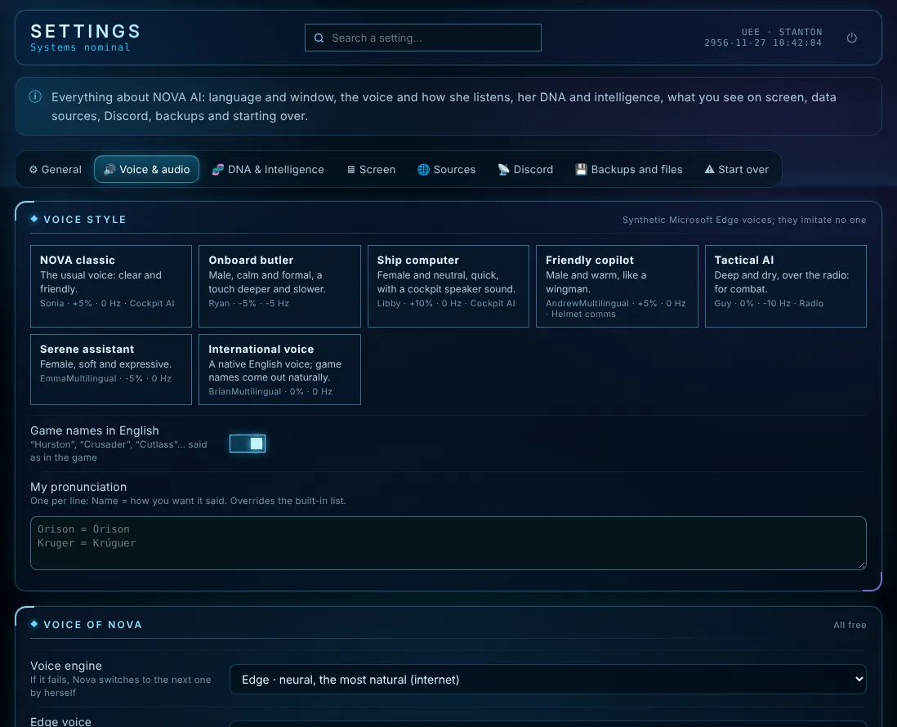
| Engine | What it's like | Internet |
|---|---|---|
| Edge | Microsoft neural voices, very natural. The list shows the ones for your language and, at the end, the Multilingual ones from other languages, which also speak yours (with their accent). | Yes |
| Piper | Good quality and offline. The voice downloads by itself the first time. | No |
| Windows | The system voice, as a last resort. | No |
At the top of Nova › Voice there are seven styles: ready-tuned combinations of voice, speed, pitch and cockpit effect, with the feel of the onboard assistants in films. Click one and Nova tries it at once; if you then change something by hand, the style is unmarked and stays your way.
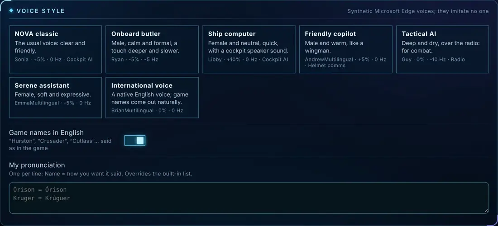
| Style | How it sounds |
|---|---|
| NOVA classic | The usual voice: clear and friendly, with cockpit effect. |
| Onboard butler | Male, calm and formal, a touch deeper and slower. |
| Ship computer | Female and neutral, quick, with a cockpit speaker sound. |
| Friendly copilot | Male and warm, over the helmet comms. |
| Tactical AI | Deep and dry, over the radio with squelch: for combat. |
| Serene assistant | Female, soft and expressive. |
| International voice | A native English voice: in other languages she speaks with an accent and says game names the English way. |
In English, Edge already says Crusader, Hurston or Cutlass as in the game, so the built-in list only applies to the other languages. In My pronunciation you add or fix your own, one per line: Orison = Orrison. Yours override the built-in list, and ▶ Test voice says a sentence with game names so you can hear it.
At the end of the Voice tab: if you have several outputs (speakers, headphones, USB audio interface…), choose where you want to hear Nova. Default uses the Windows one. ▶ Test the sound to check it. With headphones, Nova doesn't hear herself through the microphone.
How you communicate with Nova: the Listening tab brings together the microphone, how to talk to her and sleep mode (chapter 10).
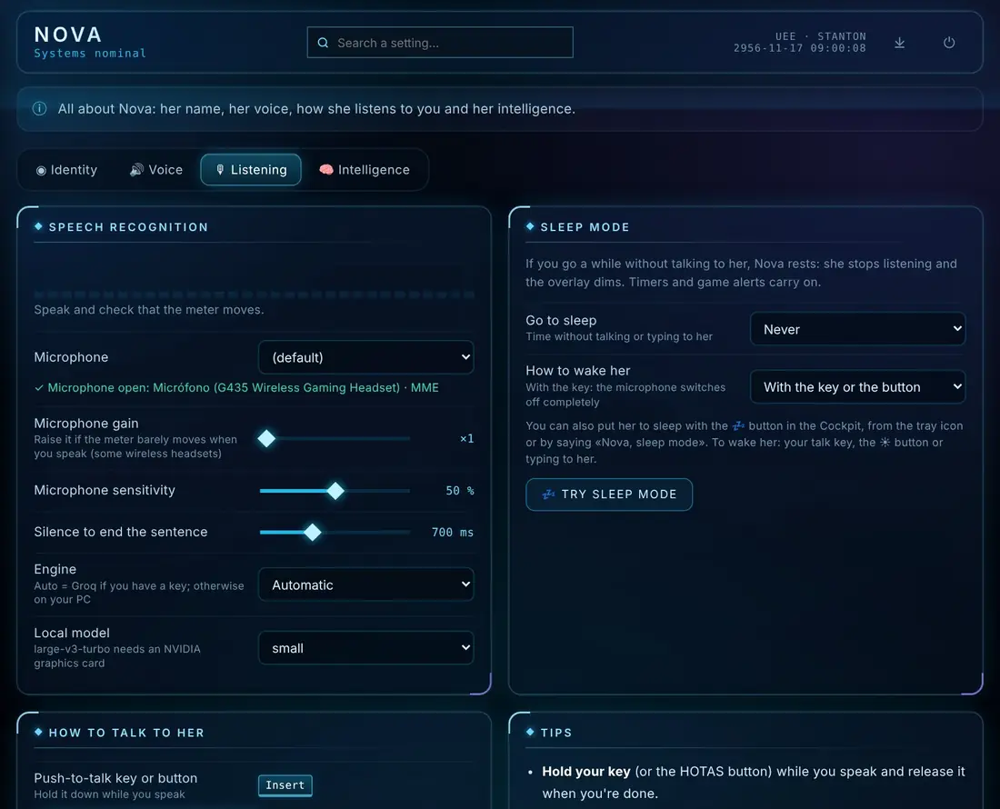
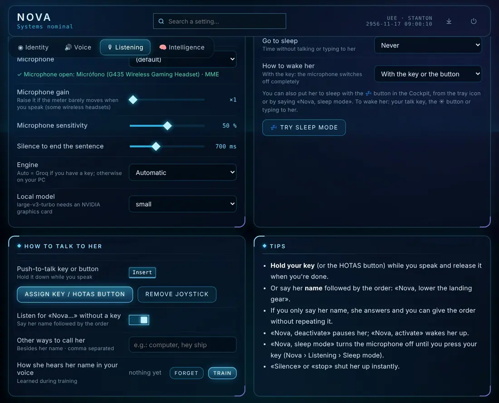
small without NVIDIA; large-v3-turbo with NVIDIA.Nova's brain: her name and yours (Identity tab), and in Intelligence the AI engine keys, the order she uses them in, her personality and token saving.
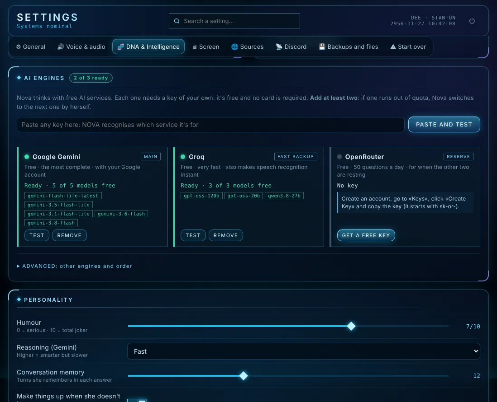
AI name, your name and what she calls you. If you change her name, repeat the training with ◆ Repeat setup so she recognises it in your voice.
Since 2.1.5 NOVA doesn't ship with built-in keys: every pilot adds their own (free, chapter 11). Paste any key into the box at the top and NOVA recognises which service it's for, saves it and tests it. Each service has its own card with a traffic light: green ready, amber paused (with the time it comes back) and red invalid key.
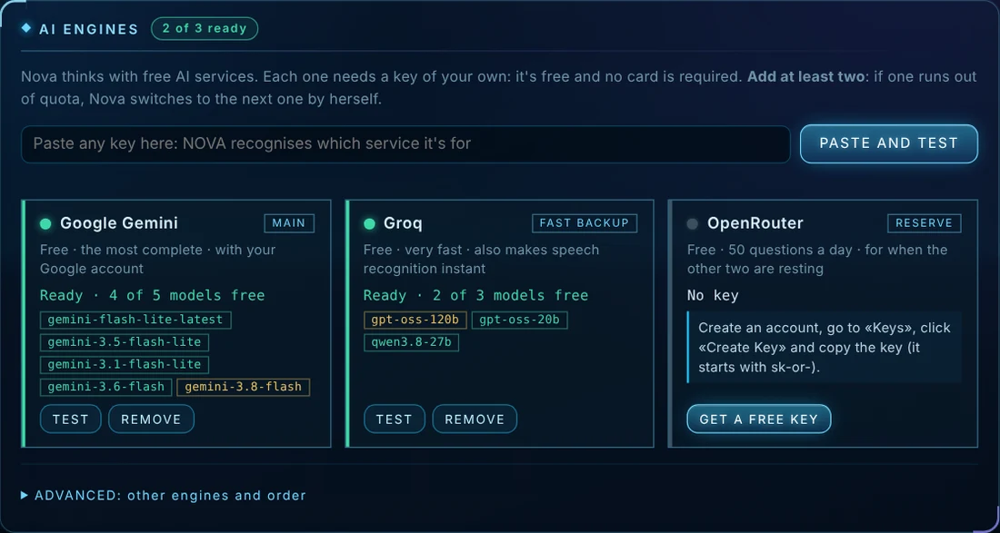
With a service's key, Nova uses all of its free models, one after another, and then moves on to the next service: Gemini (5 models) › Groq (3) › OpenRouter. On Gemini and Groq each model has its own quota, so if one fills up the next is usually free. Each failure is handled according to its cause:
| What happens | What Nova does |
|---|---|
| Per-minute limit | If the service asks to wait a few seconds, she waits and retries; if it's longer, that model rests for exactly that long and she tries the next one. |
| Daily quota used up | She sets that model aside until the quota renews (on Gemini, at midnight California time). |
| Server overloaded or not responding | Short pause and she tries the next one; if it keeps failing, the pause grows (up to 10 min). |
| Invalid key | The card turns red until you paste another one. |
If none is free, Nova tells you which one is failing and when it comes back. Under Advanced you can add Mistral (paid), use Ollama on your PC as a last resort, choose the engine order yourself or clear every pause with Retry all now.
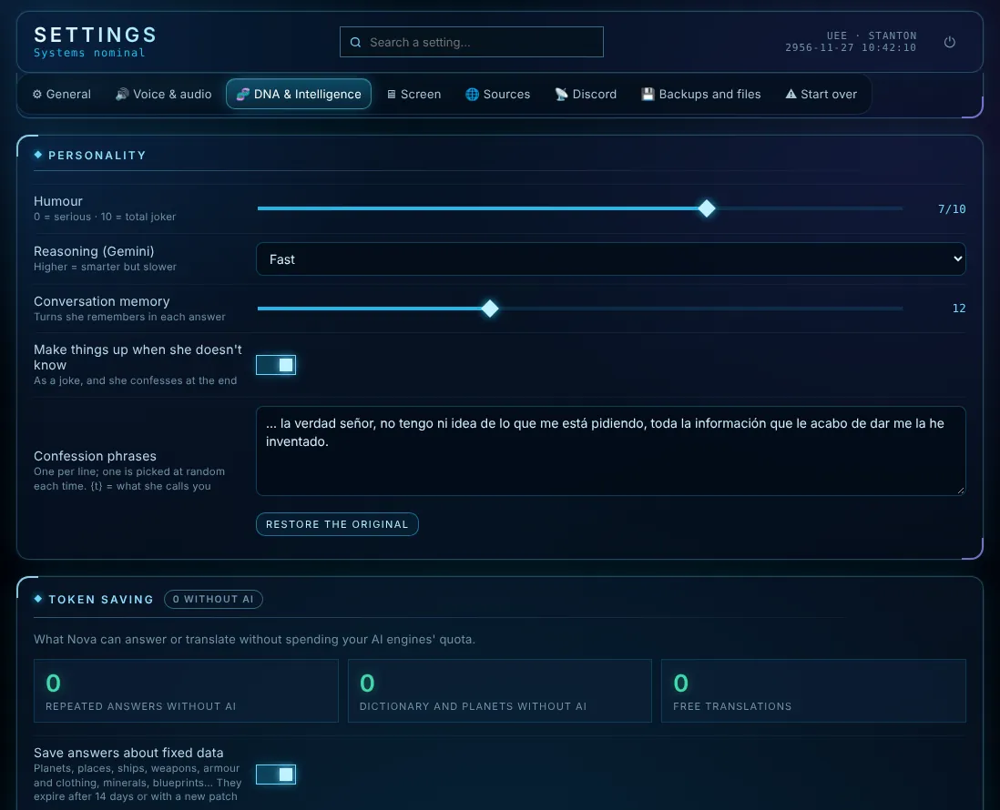
| Setting | What it's for |
|---|---|
| Humour | From 0 (serious) to 10 (total joker). |
| Reasoning (Gemini) | Higher = smarter but slower. "Fast" is ideal while flying. |
| Conversation memory | How many previous turns she remembers in each answer. |
| Make things up when she doesn't know | On: she makes up the answer with some wit and owns up at the end. Off: she tells you with humour that she doesn't know. |
| Confession phrases | One per line; she picks one at random. {t} is replaced by what she calls you. Restore the original goes back to the built-in one. |
At the end of Nova › Intelligence. Free keys have a daily limit. Nova answers everything she can without the AI:
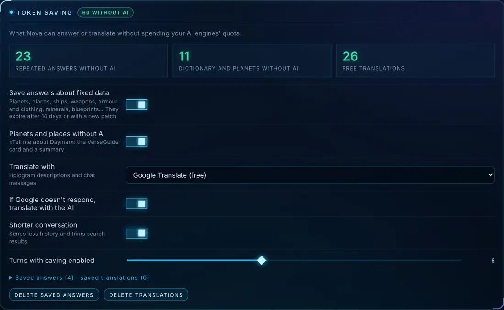
If the AI answers using only data that doesn't change (ships, weapons, armour and clothing, components, minerals, blueprints, planets…), the answer is saved. The next time you ask the same thing ("what is the Cutlass Black?" or "tell me about the Cutlass Black") Nova repeats it without spending anything. They expire after 14 days or when the patch changes. Prices, routes, your session and questions that depend on the conversation are never saved.
"Tell me about Daymar", "what is Security Post Kareah?": Nova gets the VerseGuide card, shows it as a hologram and gives you a spoken summary.
Hologram descriptions and chat messages are translated with Google Translate. Only if Google doesn't respond is the AI used (you can turn that off). Translations are saved and never requested again.
Sends less history to the AI (6 turns by default) and trims long answers and search results. Counters, a list of saved answers and buttons to delete them.
Everything NOVA draws over the game and how the window looks, in three tabs: Overlay (the status logo), Holograms and Appearance (effects level and colour theme). The preview uses a game scene as background so you can see how it looks.
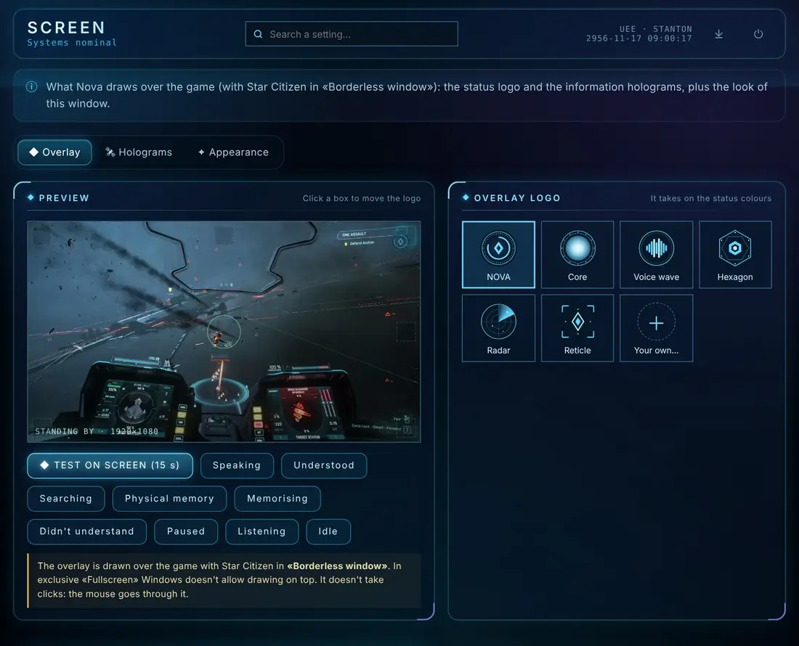
Hologram cards on top of the game. They appear like a projection (a line of light that opens with a power-on sound), have scan lines while on screen and fold away with a power-off sound.
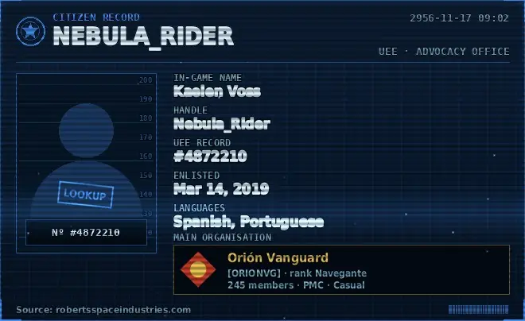
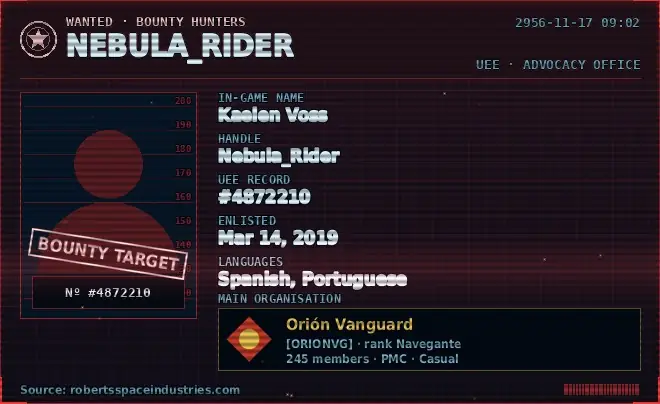
When you look up a player: profile picture, in-game name, handle, record number, enlistment date, languages and the organisation with its logo. Whatever the player hides shows as REDACTED.
If the target of a bounty or PvP mission is a player and you say "yes" to looking them up, a two-tone alert sounds before the card opens, in red and with the BOUNTY TARGET stamp. If it's an NPC pilot, she just tells you.
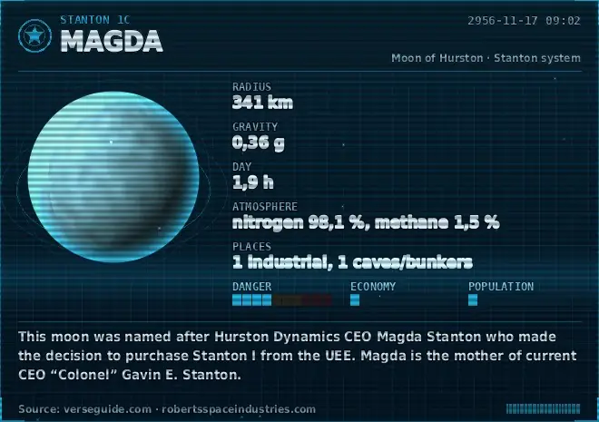
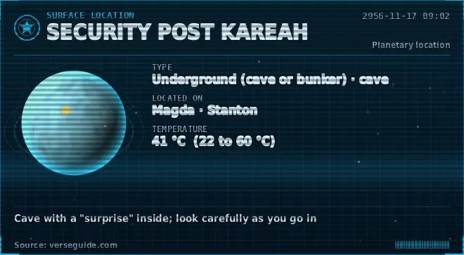
"Nova, tell me about Daymar". Data from verseguide.com: type, radius, gravity, day length, atmosphere, danger, economy, population, its locations and a description in your language.
Caves, outposts, bases, bunkers: "what is Security Post Kareah?" → type, where it is, temperature and description in your language.
On arrival: when the Game.log shows that you're approaching a planet or moon, or arriving at one of its locations, the card appears by itself (at most once every half hour for the same place).
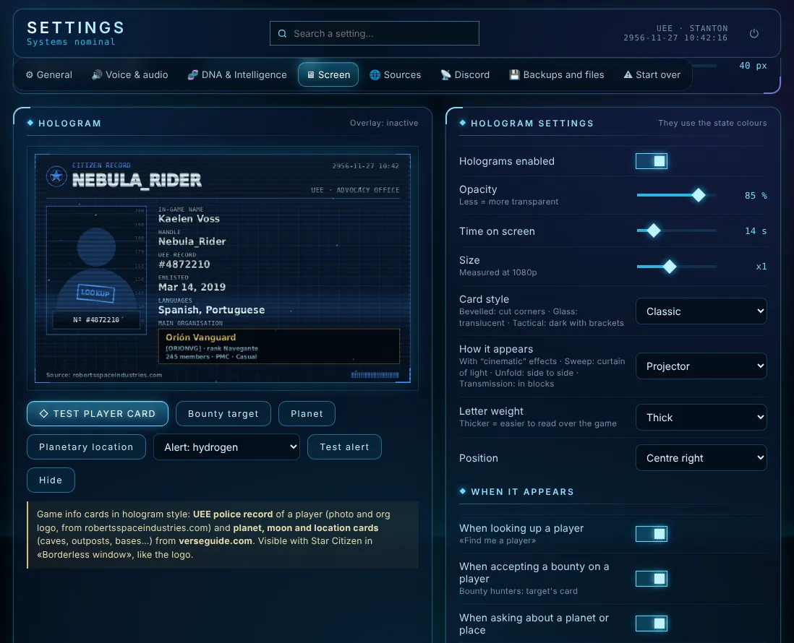
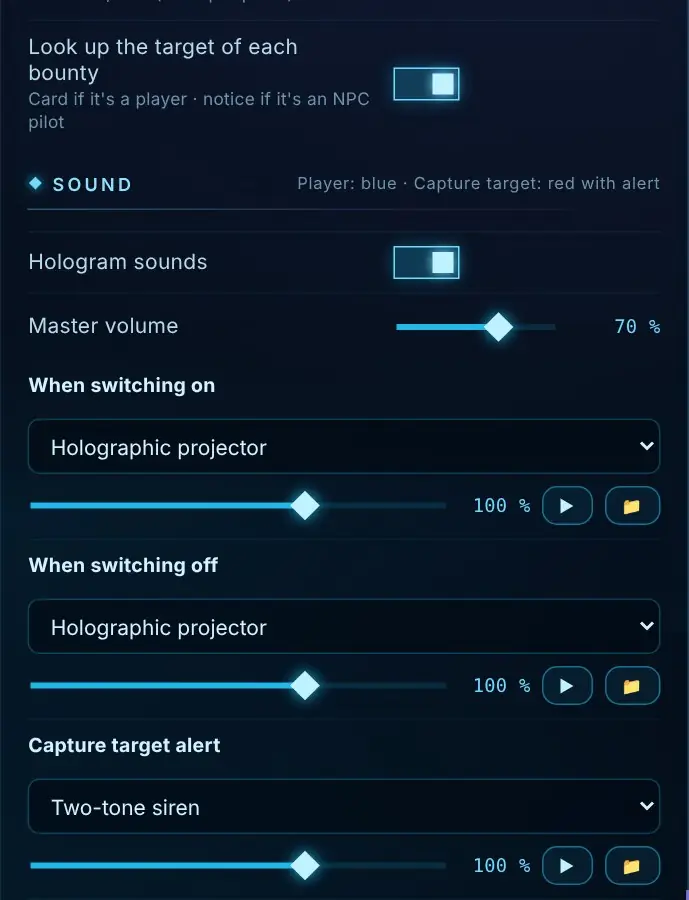
Each hologram makes a sound when it turns on and turns off, and bounty targets have an alert before opening. For each of the three moments you choose:
| Moment | Sounds in the list |
|---|---|
| On power-on | Holographic projector · Digital pulse · Scanner · Chime · Engine start |
| On power-off | Holographic projector · Digital pulse · Disconnect · Chime · Engine shutdown |
| Bounty alert | Two-tone siren · Klaxon · Fast beeps · Proximity alarm · Combat bell |
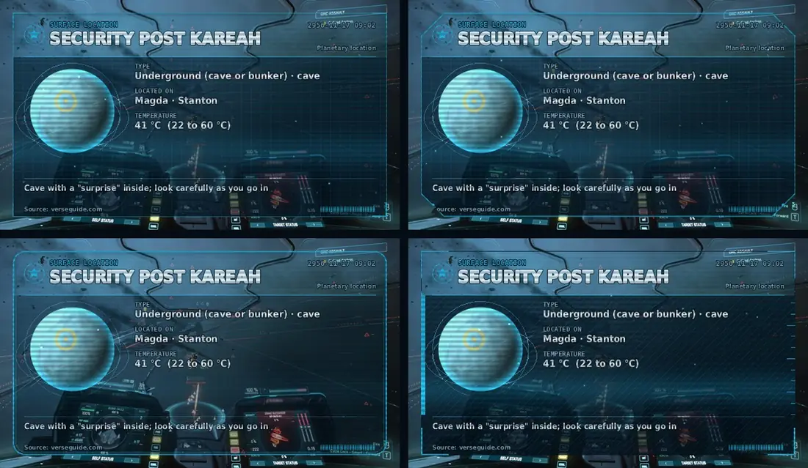
Classic (grid and HUD corners), Bevelled (corners cut diagonally), Glass (translucent and rounded) or Tactical (dark, with brackets and a side bar).
With cinematic effects: Projector (opens from the centre), Sweep (a curtain of light from top to bottom), Unfold (side to side) or Transmission (materialises in blocks). When leaving it does the same in reverse.
Normal, Thick (default) or Extra thick. Small text only gets as much thicker as it can without blurring.
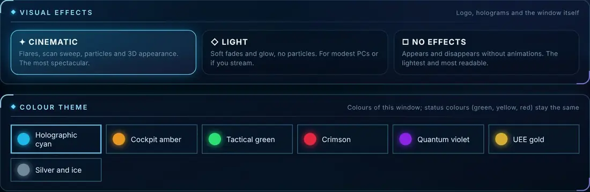
Sparks, scan sweep, chromatic aberration when projected, specks of light and a ring that spins around the logo.
Soft fades and glow, no particles or flicker. For modest PCs or if you stream.
Appears and disappears instantly, without animations. The lightest and most readable.
Colour theme: Holographic cyan (the usual), Cockpit amber, Tactical green, Crimson, Quantum violet, UEE gold or Silver and ice. It changes this window's colours at once; the status colours (green, yellow, red, purple) don't change, so they keep meaning the same.
Where Nova gets her information and what she remembers, in five tabs: Sources, Dictionary, What she knows about you, Logbook & statistics and Discord. On start she checks for new data for your patch before turning anything on.
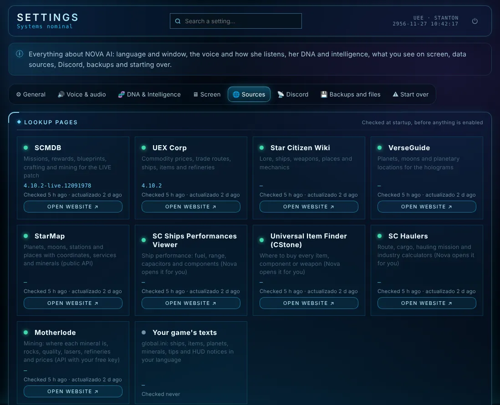
| Source | What it provides |
|---|---|
| SCMDB | Missions, rewards, blueprints, crafting and mining for the LIVE patch. |
| UEX Corp | Commodity prices, trade routes, ships, items and refineries. |
| Star Citizen Wiki | Lore, ships, weapons, places and mechanics. |
| Your game's texts | The global.ini: official names and HUD alerts in your language. |
| RSI | Public player and organisation records, and server status. |
| VerseGuide | Planets, moons and planetary locations for the holograms. |
| StarMap | Planets, stations and places: gravity, temperature, coordinates, services (clinic, landing pads) and minerals. |
Pages Nova opens in your browser when they're the best source (tell her: "open the item finder"): Universal Item Finder (finder.cstone.space, where to buy each item), SC Ships Performances Viewer (spviewer.eu, ship performance) and SC Haulers (schaulers.com, cargo and route calculators).
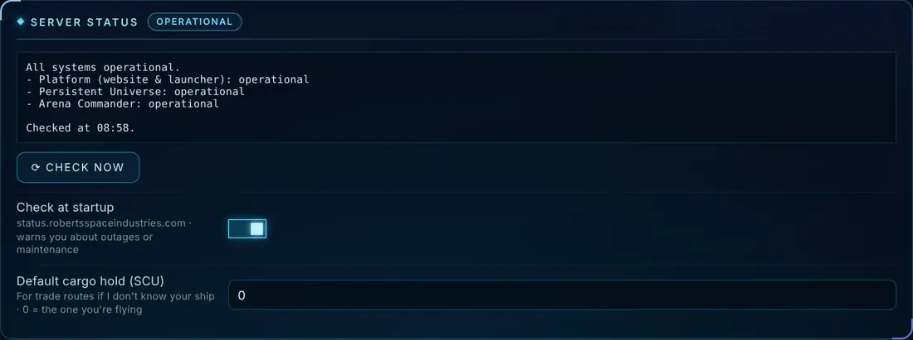
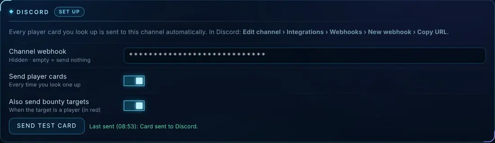
When NOVA starts she checks status.robertsspaceindustries.com and warns you about outages or maintenance. Check now looks again. Ask her "how are the servers?".
Paste a channel's webhook (Discord: Edit channel › Integrations › Webhooks): after each card Nova asks whether to send it; with "yes" it's posted with photo and logo, bounty targets too (in red). Send test card posts a sample one and below you see the result of the last post.
The SCU Nova uses to work out trade routes when she doesn't know which ship you're in.
In Settings › General you turn the check for new versions on start and on exit on or off, and you can look for one by hand with Check for updates now. How updating works: section 02.
What Nova keeps about you: Information › What she knows about you and Logbook & statistics. Your files, backups and starting over are in Settings (chapter 10).
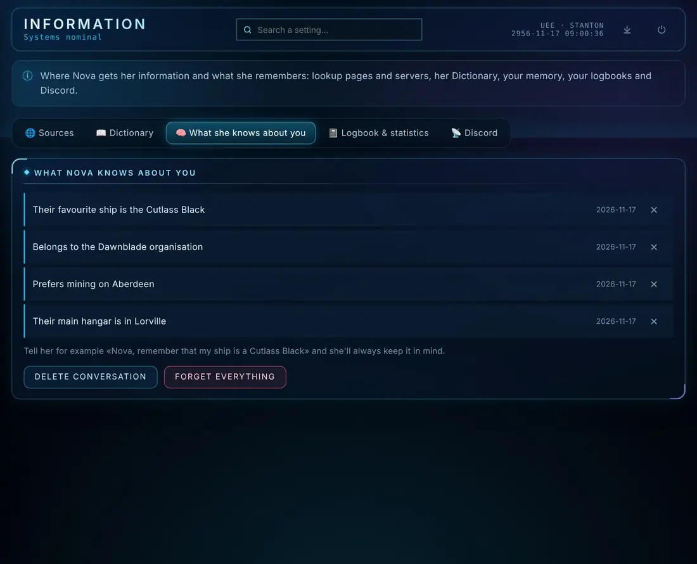
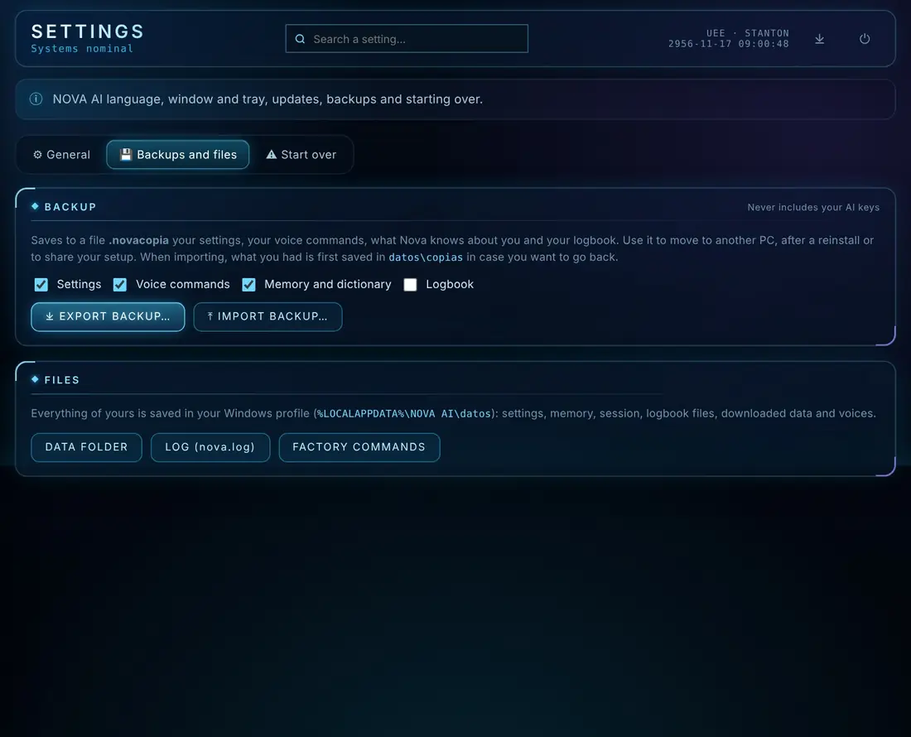
In Settings › Backups and files. Everything of yours lives in %LOCALAPPDATA%\NOVA AI\datos. Three buttons:
Every game session is written to a .log file you can open with Notepad (the last 60 are kept). It comes from the Game.log itself: if you open Nova with the session already started or after playing, she rebuilds the full logbook.
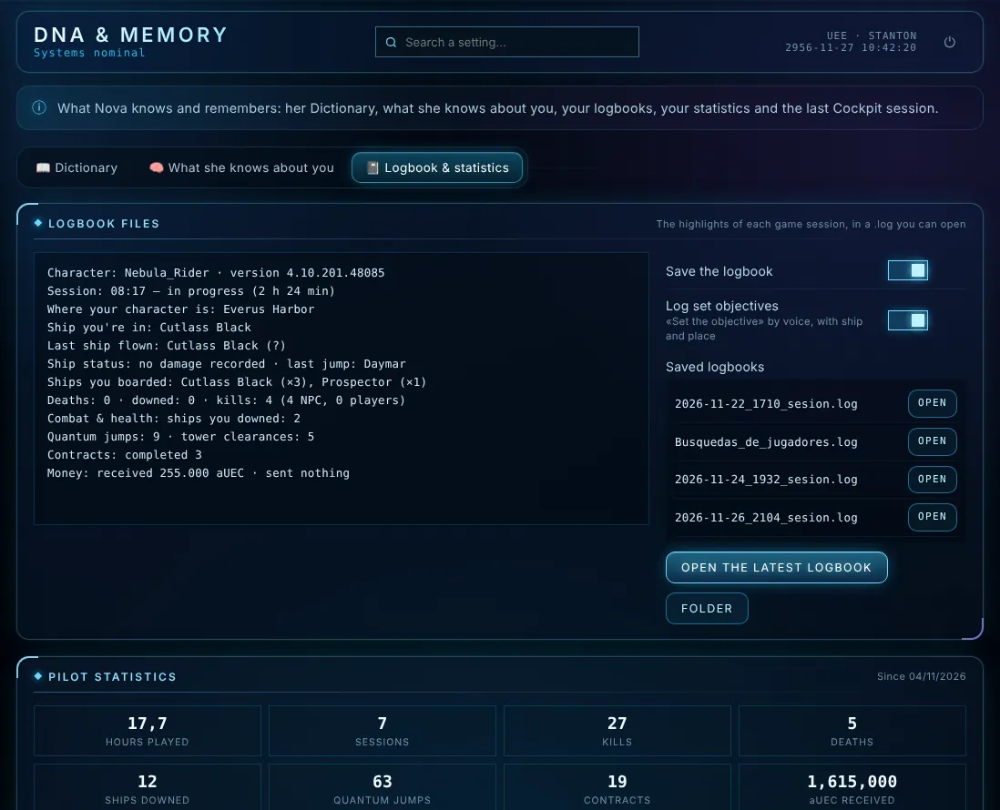
| Label | What it records |
|---|---|
| COMBAT | NPC and player kills (weapon and cause) and ships you destroy or disable. |
| DEATH · DEATHS | Your deaths (who, with what, cause), other people's and the respawn point. |
| HEALTH | Injuries, incapacitations with their cause and medical bed healing. |
| LOAD · NETWORK | Connection, spawning, loading time, stuck loads and network stalls. |
| SHIP · PARTY · TOWER… | Boarding and leaving ships, who boards yours, party, hangar, contracts, money, purchases, blueprints. |
Every player you look up (or that Nova looks up for a bounty) is written to Busquedas_de_jugadores.log, in the same logbook folder. It's a single file that isn't deleted with old sessions:
If a session is running, the search also goes into that session's logbook (label PLAYER or TARGET).
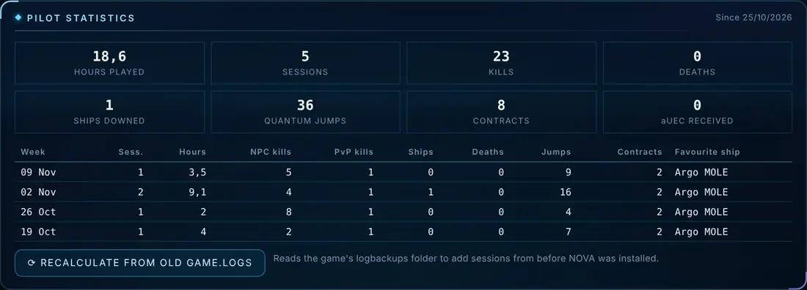
Hours, kills, deaths, jumps, contracts and money spent in shops across all your sessions, week by week. Recalculate reads the game's old Game.log files (logbackups) to add what you played before installing Nova. Ask her "how many kills this month?".
Nova's physical memory: Diccionario_de_consultas.txt, in your data folder. Sorted by groups (planets and moons, stations, cities, places, ships and vehicles, armour, personal and ship weapons, components, resources and minerals, commodities, clothing, paints, manufacturers…) and within each one in alphabetical order. Variants go together under their family, because they're not the same: Attrition-1 is size 1 and Attrition-5 is size 5.
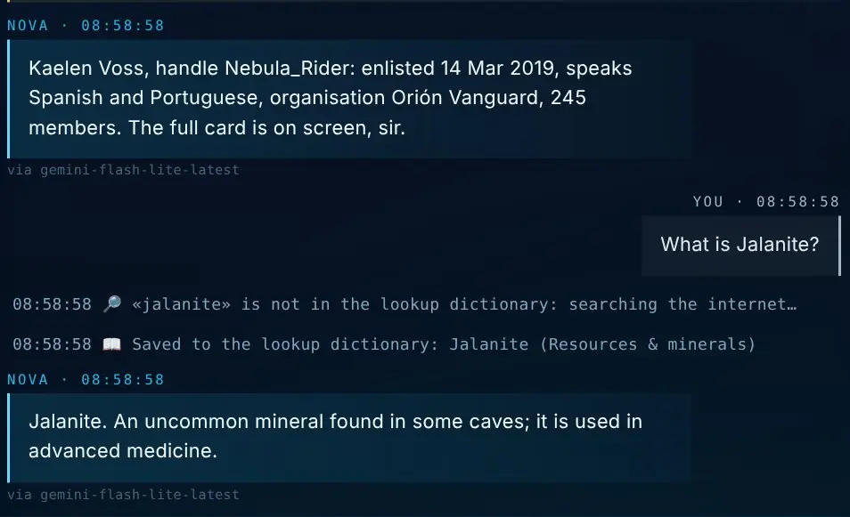
If it doesn't exist (first installation), Nova creates it, tells you and fills it with the official game texts in your language (the game's global.ini): about 7,000 entries, without spending anything. Each entry carries the patch, the date and its origin (game, internet or AI).
It's kept across versions, when updating and when you "start from scratch", and the uninstaller doesn't delete it. With a new patch or translation, what comes from the game updates by itself. "Nova, update the entry for X" looks it up again.
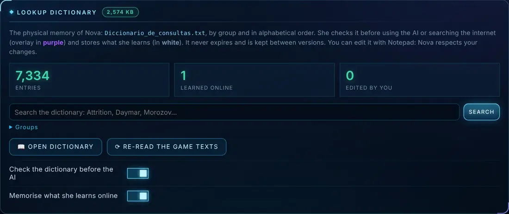
* Name: definition). Nova uses your text and never overwrites it again. Search shows you what she knows about something without asking her.In Settings you have the language (the only place to change it), the window and tray, updates, the guided tour, About, backups and starting over. NOVA AI speaks five languages: Spanish, English, Catalan, French and German.
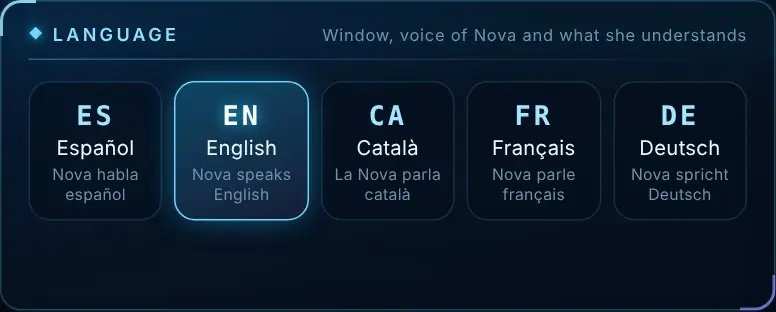
Click the card for your language. The window reloads and everything changes: the texts, Nova's voice, what she understands, her voice commands, the holograms and this manual. You can also choose it on the installer's first screen, which suggests the Windows one.
Nova always addresses you formally: señor, sir, senyor, monsieur, Herr… (you change it in Nova › Identity › What she calls you).
| Language | "Where can I buy a P4-AR?" | "Lower the landing gear" |
|---|---|---|
| English | "Where can I buy a P4-AR?" | "Lower the landing gear" |
| Català | «On puc comprar un P4-AR?» | «Baixa el tren» |
| Français | «Où puis-je acheter un P4-AR ?» | «Sors le train» |
| Deutsch | «Wo kann ich ein P4-AR kaufen?» | «Fahrwerk ausfahren» |
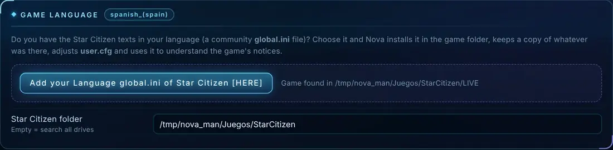
LIVE\data\Localization\<language>\global.ini.global.ini.antes_de_nova), sets g_language in user.cfg and uses it to understand the game's alerts in your language.spanish_(latin_america) slot.Checks from your PC, without opening the browser, that every page Nova uses responds (UEX, wiki, scmdb, VerseGuide, StarMap, spviewer, CStone, SC Haulers, RSI…). Green: responds · yellow: slow · red: no response.
In the window header you have 🔎 Search a setting… (or press Ctrl+F). Type part of an option's name (weight, microphone, theme…): it shows you where it is and, with Enter or a click, takes you there and highlights it.
.novacopia file: settings, voice commands, memory and dictionary, and logbook. It never includes your AI keys or your Discord webhook.datos\copias, and this PC's own paths (game folder, microphone…) are kept.nova.log) and the built-in commands. Settings › Start over deletes what Nova has learned about you and goes back to the first-time setup.Since version 1.4, when you close the window Nova doesn't shut down: she stays in the Windows tray, next to the clock (sometimes inside the little ^ arrow). She keeps listening, the overlay stays in the game and timers keep alerting you. The first time, Windows shows a notice so you know where she is.
Opens the window (or brings it to the front if it was already open).
Open NOVA AI, Mute the microphone (MUTE), Sleep mode and Exit NOVA AI, which closes her completely.
Sends the window to the tray at once. ⏻ still shuts Nova down.
If you go a while without talking to her, Nova rests: she stops listening and the overlay dims, breathing slowly. Timers and game alerts keep working.
After the first-time setup (or the first time you open 1.4), Nova shows you in one minute where every option is: the Cockpit, the talk button, sleep mode, MUTE and every section.
Move on with NEXT or the arrow keys, and leave with EXIT or Esc. To repeat it: Settings › General › Guided tour.
The Questionnaire button, below "Read the Manual", opens eight questions from 1 to 10 (or N/S if you don't use that part) and a box for your ideas.
An API key is like a password that lets Nova use an artificial intelligence service on your behalf. Since 2.1.5 NOVA AI doesn't ship with built-in keys: the old ones were the same for everyone and the free quota (which is per account, not per person) was used up by everyone together. With your own you have the whole quota to yourself. They're free, need no credit card and take a couple of minutes to get.
| Service | What for | Cost | Starts with |
|---|---|---|---|
| Gemini | Nova's main brain. | Free, no credit card | AIza… or AQ.… |
| Groq | Ultra-fast backup and cloud speech recognition. | Free, no credit card | gsk_… |
| OpenRouter | Lots of free models as a backup. | Free (50 requests/day) | sk-or-v1-… |
| Mistral | European AI. Optional: no longer in the built-in chain. | Paid (since August 2026) | no fixed prefix |
You can also paste them in the last step of the first-time setup.
Google states that on the free plan it may use what you send to improve its products.
gsk_…): it's only shown once.gpt-oss-120bWith Groq you'll also get the fastest speech recognition ("Automatic" engine in Nova › Listening).
sk-or-v1-…) before closing the window.Use the models ending in :free or openrouter/free, which picks an available free one.
Since August 2026 Mistral is paid or by subscription, so 2.0 has removed it from the built-in engine chain. It's still your option:
mistral-small-latest).If you already had a DeepSeek key (paid), Nova keeps using it.
| If… | Try this |
|---|---|
| She doesn't hear me | If the core says SLEEP MODE, press your key or ☀. Check that the meter's MUTE button is OFF and that your headset isn't muted. Choose your microphone in Nova › Listening: it tells you there if only silence arrives. Raise the sensitivity or the gain if you speak softly. |
| She triggers by herself | Lower the sensitivity or turn off "Listen without a key". If it's a learned form of her name, remove it with Forget. |
| She doesn't react to her name | Repeat the training in Nova › Identity. Choose a name of 2 or 3 syllables that isn't a common word. |
| The game doesn't get the keys | If you run Star Citizen as administrator, run Nova as administrator too. Turn on "Press keys only with the game in front". |
| A key doesn't work | ⟳ Sync now and check "View details". If the action is only on your HOTAS, give it a keyboard key too. |
| "All my engines are out of quota" | Add your own keys (section 11) or wait until the next day. |
| Nova hears herself | Use headphones. The microphone already goes deaf while Nova is speaking. |
| The overlay isn't visible | Put the game in "Borderless window". Try "◆ Test on screen" and check the chosen monitor. |
| The hologram isn't visible or makes no sound | Same as the overlay: "Borderless window". Check Holograms enabled and click Test. For the sound: Hologram sounds, their volume and the Audio output. |
| The hologram description appears in English | Turn on Translate the descriptions and check that you have an AI engine with quota (section 09). It's translated next time. |
| A player shows up as an NPC pilot | RSI has no record with that name (or it couldn't be checked). Look it up by hand: "look up a player". |
| The update doesn't install | Accept the Windows permission (UAC). If it fails, download the installer from GitHub (Releases) and run it: it keeps your data. |
| The message isn't typed in the chat | In SC Game › Game chat: keys f12 / enter / f12 and "Keys, letter by letter". If it drops letters, raise the typing speed or the wait. |
| The card doesn't reach Discord | Look at the Cockpit message or "Last post" in Information › Discord: it says what Discord answered. If the webhook doesn't exist, create a new one and paste it. Send test card checks it. |
| A definition is wrong or out of date | Say "Nova, update the entry for X" or correct it yourself in the Lookup dictionary (Settings › Files). |
| Nova doesn't respond to anything | She may be stopped (overlay in red): switch on the Cockpit switch or say "Nova, activate". |
| The holograms are hard to read | Raise the weight in Screen › Holograms › Letter weight (Extra thick), try the darker Tactical style, or raise the opacity. |
| The translation doesn't appear | Restart the game. Check the folder in SC Game › Game language and install the translation again. |
| The window doesn't open | Nova uses Edge. If you don't have it, open the address in ui_puerto.txt (data folder) in your browser. If the window is closed, look for her in the Windows tray. |
| It closes on start | NOVA AI.exe shows you the error. For more details open DEPURAR.bat in the program folder, or look at fallos.log in your data folder. |
| The installer doesn't open | It shows you the reason and the log (%TEMP%\NOVA_AI_Setup.log). As a last resort, INSTALAR_CONSOLA.bat from Nova.zip. |
%LOCALAPPDATA%\NOVA AI\datos. No servers of its own, no accounts, no telemetry.The full text is in NORMAS_Y_PRIVACIDAD.en.md, which you accepted when installing.
Play fair: Nova presses keys like VoiceAttack; you're responsible for following Star Citizen's terms. The AI can be wrong (and if she makes something up, she owns up). Your AI keys are yours: don't share them.
| Development | Aaron B. Roldan · gametag 0zzyt0 · with the Claude Opus 5.5 AI engine (Anthropic) |
| Thanks | Defcorp org · Faibo, Galleg0, Sr.Scott, AlpacaInTrouble, Lother and many more |
| Licence | MIT licence (free software): use it, modify it and share it, keeping the copyright notice (LICENSE) |
| Game language | 0zzyt0 and the community |
| Game data | Community pages: see "Thanks to the community" (section 14) |
| Game.log formats | Community projects all-slain and sc-assistant (MIT licence) |
| AI and voice engines | Google Gemini, Groq, OpenRouter, Mistral, Microsoft Edge, Piper, Whisper |
NOVA AI wouldn't be possible without these community projects. All the credit for their information goes to the people who create and maintain them, often in their free time. If you find them useful, visit and support them.
| Page | Their credit and their rights |
|---|---|
| Star Citizen Wiki starcitizen.tools | The community encyclopedia: lore, ships, weapons and places. Texts by their authors under the CC BY-SA licence. |
| UEX Corp uexcorp.space | Commodity prices, trade routes, ships and refineries, updated daily by its users. |
| SCMDB scmdb.net | Missions, rewards, crafting blueprints and mining for each patch. Data under the CC BY-NC-ND 4.0 licence. |
| VerseGuide verseguide.com | Planet, moon and planetary location cards. |
| StarMap starmap.space | Planets, stations and thousands of places with coordinates and services, and its free public API. |
| SC Ships Performances Viewer spviewer.eu | Ship performance: fuel, range, capacitors and components. |
| Universal Item Finder finder.cstone.space | By Meepowski (CStone): where to buy every item in the 'verse, with data contributed by the community. |
| SC Haulers schaulers.com | Route, cargo and hauling mission calculators for the industry. |
| Roberts Space Industries robertsspaceindustries.com | Public citizen and organisation records, and server status. |
| Game language | 0zzyt0 and contributors; game texts by Cloud Imperium Games. |
| Google Translate · DuckDuckGo | Translations and web searches. |
Each page belongs to its authors and has its own terms of use. NOVA AI only looks them up online (or through their public APIs), as you would from your browser: it doesn't modify their data, doesn't redistribute it (what's downloaded stays on your computer) and doesn't claim authorship.